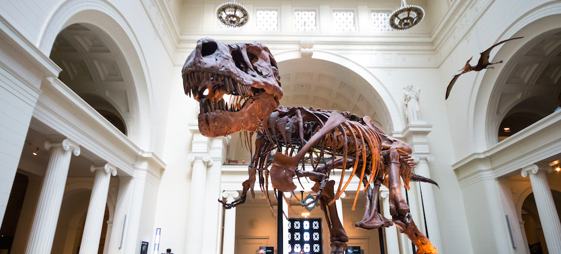
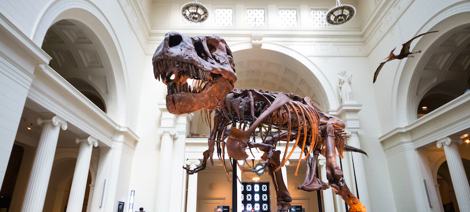

INTRODUCTION
MUSEUMS, institution dedicated to preserving and interpreting the primary tangible evidence of humankind and the environment. In its preserving of this primary evidence, the museum differs markedly from the library, with which it has often been compared, for the items housed in a museum are mainly unique and constitute the raw material of study and research. In many cases they are removed in time, place, and circumstance from their original context, and they communicate directly to the viewer in a way not possible through other media. Museums have been founded for a variety of purposes: to serve as recreational facilities, scholarly venues, or educational resources; to contribute to the quality of life of the areas where they are situated; to attract tourism to a region; to promote civic pride or nationalistic endeavour; or even to transmit overtly ideological concepts. Given such a variety of purposes, museums reveal remarkable diversity in form, content, and even function. Yet, despite such diversity, they are bound by a common goal: the preservation and interpretation of some material aspect of society’s cultural consciousness.
 
